Welcome to a week in my life, where I log the waste I dispose of. This project, my personal "Trash of the Week," isn't just about what I throw away, but about what it reveals about me. As Sarah Newman argues, garbage isn't simply refused; it's a narrative waiting to be deciphered. Newman, in her work, emphasizes that discarded objects offer unique insights into human behavior and cultural practices, seeing trash not as the end of an object's story, but as the beginning of another – a story about the lives of those who discard it.
Newman's work highlights the importance of moving beyond shallow interpretations of trash, urging us to consider the historical and social contexts surrounding our discarded items. This project, while personal, aims to do just that. It's not enough to simply catalog what I've thrown away; I want to understand why I discarded it. What needs drove its purchase? What habits led to its disposal? Are there deeper patterns at play, reflecting societal pressures or unconscious biases? These questions become crucial in understanding what Newman wants to reflect through her work.
The difference that is noticeable between these two approaches is that Newman's work often focuses on historical examples, but this "Trash of the Week" offers a contemporary, crowdsourced perspective, broadening the scope of waste analysis and making it accessible to a modern audience. It's a small experiment, a week-long glimpse into my waste stream, but I hope it provides a starting point for deeper reflection on the stories our trash tells, about ourselves and the world we inhabit.
This week's trash tells a story of caffeine dependency, sweet cravings, and a surprising streak of clumsiness. My coffee pod consumption remains a glaring testament to my reliance on that morning jolt, generating a mountain of single-use plastic and foil. The Oreo wrapper, a crumpled testament to late-night snacking, suggests a sugar craving that clearly won out over my better judgment. And the disposable ice cream cup? A fleeting moment of indulgence followed by the guilt of contributing to the ever-growing pile of disposable items. The unexpected trend of broken items, however, is a new development, leaving me slightly bewildered and a little more aware of my own clumsiness.
One group of items highlights my reliance on convenience and quick fixes.
The coffee pods, individually packaged for single servings, represent the ease and speed I crave in the mornings, but also the environmental cost of that convenience.
The Oreo wrapper, similarly, speaks to a desire for instant gratification, a quick hit of sugar and nostalgia.
The disposable ice cream cup, while convenient for a late-night treat, underscores the pervasive culture of disposability, where convenience often trumps sustainability.
Another group of items reveals the wear and tear of daily life.
The broken clothes hanger, snapped while wrestling with a pile of laundry, is a minor casualty of everyday chores.
The snapped debit card, a more frustrating incident, speaks to the fragility of the plastic we rely on for our financial transactions.
The defunct phone charger cable, a victim of constant use and perhaps a little too much yanking, highlights the short lifespan of so many of our essential tech accessories.
Finally, a smaller group of items reflects my efforts to maintain some semblance of health and hygiene.
The empty sunscreen bottle, a welcome sign of time spent outdoors, reminds me of the importance of sun protection.
The finished packet of vitamin pills, while perhaps less exciting, speaks to a commitment to wellness.
And the used paper towels, a constant presence in any household, are a reminder of the everyday spills and messes that are simply part of life.
This last category, while seemingly mundane, actually highlights a significant area for potential reduction – perhaps cloth towels could replace some of the paper waste in the future.
 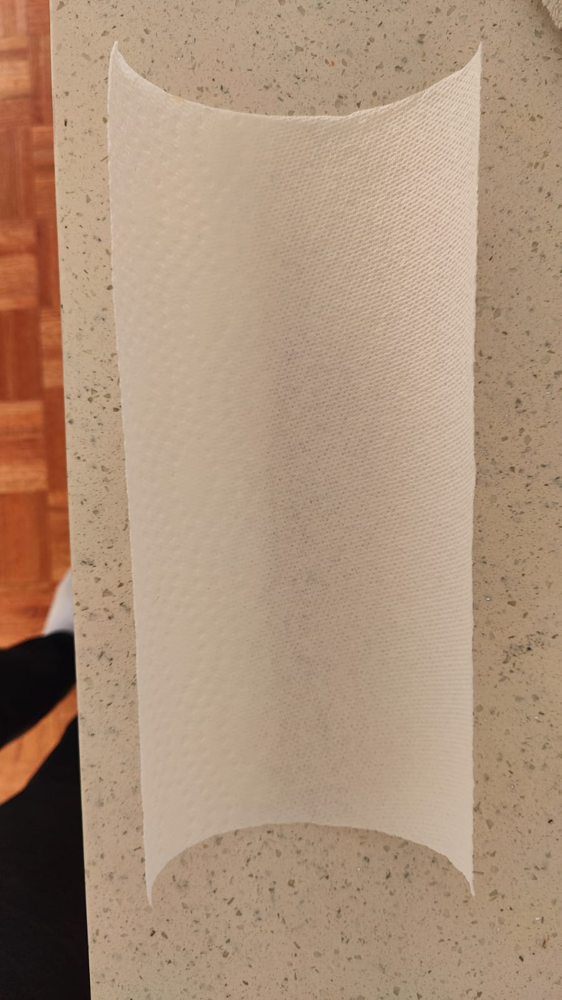
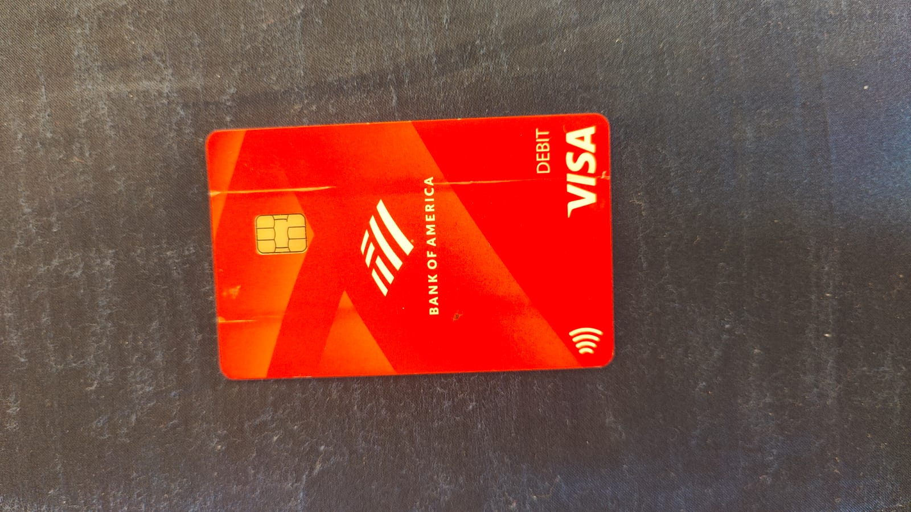
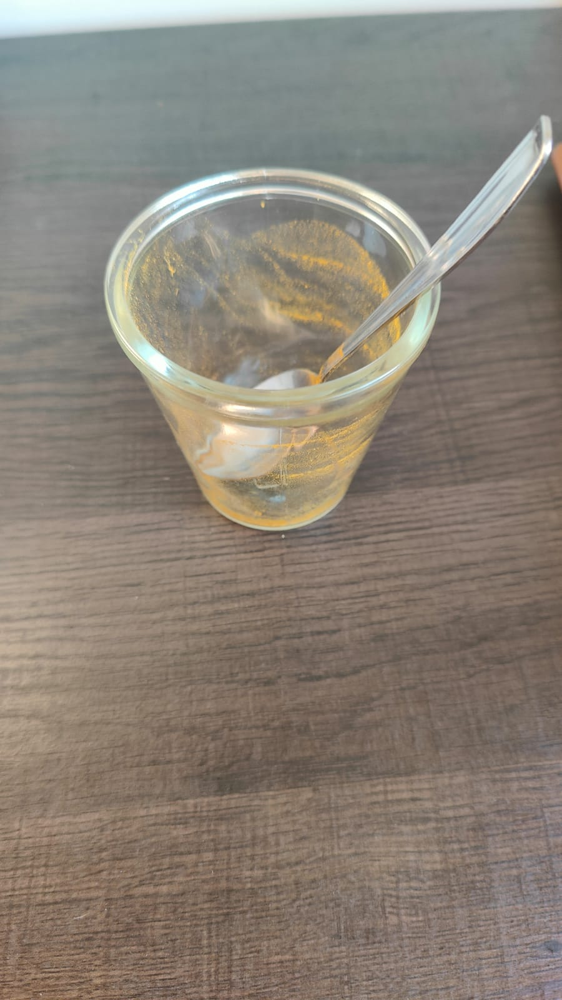
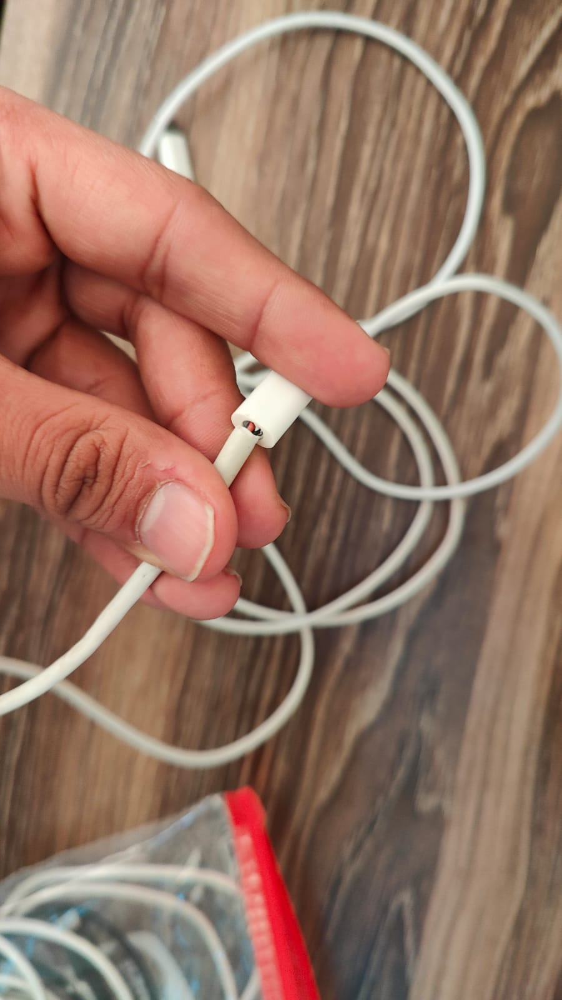
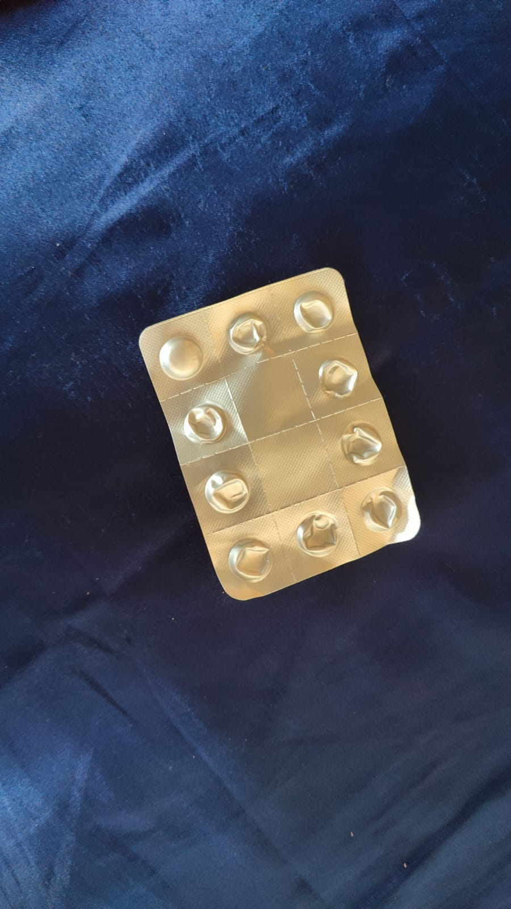
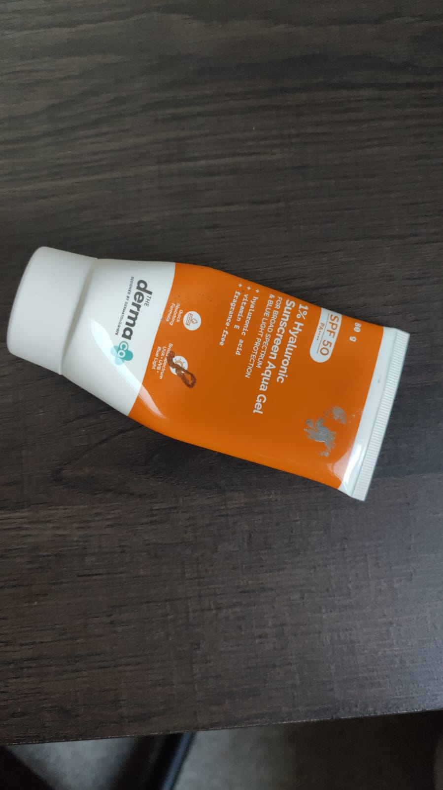
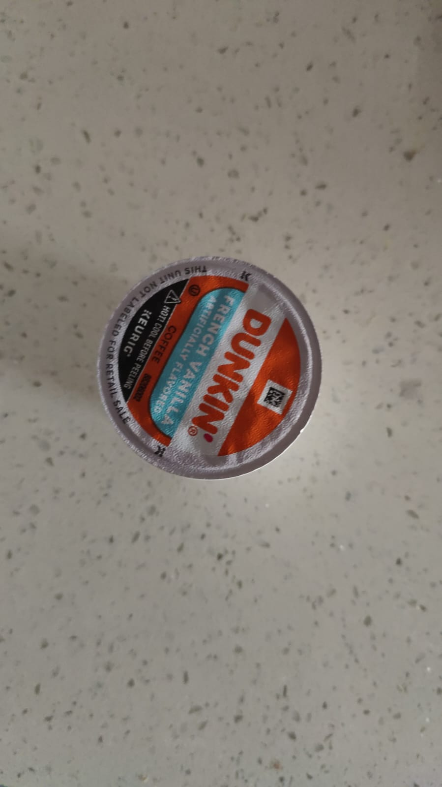
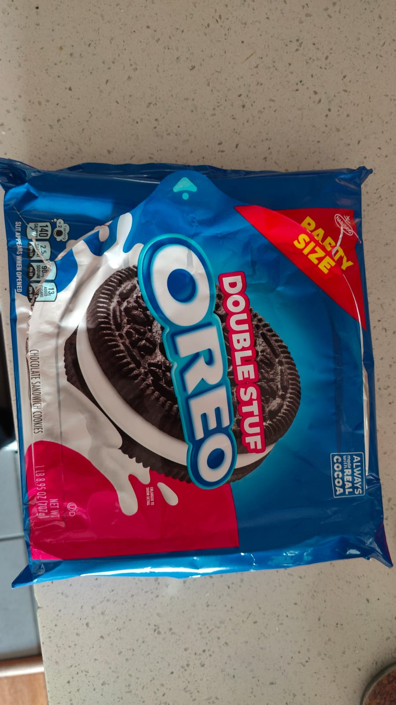
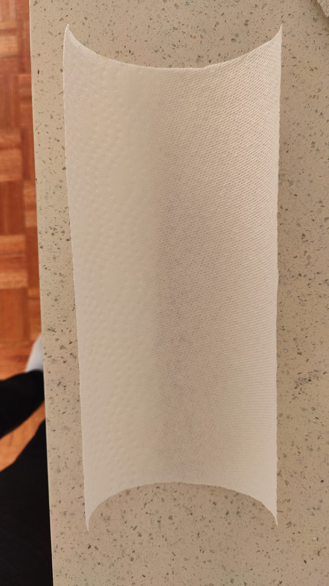
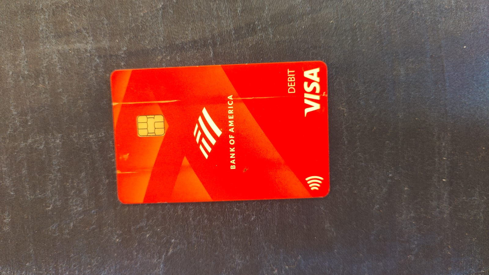
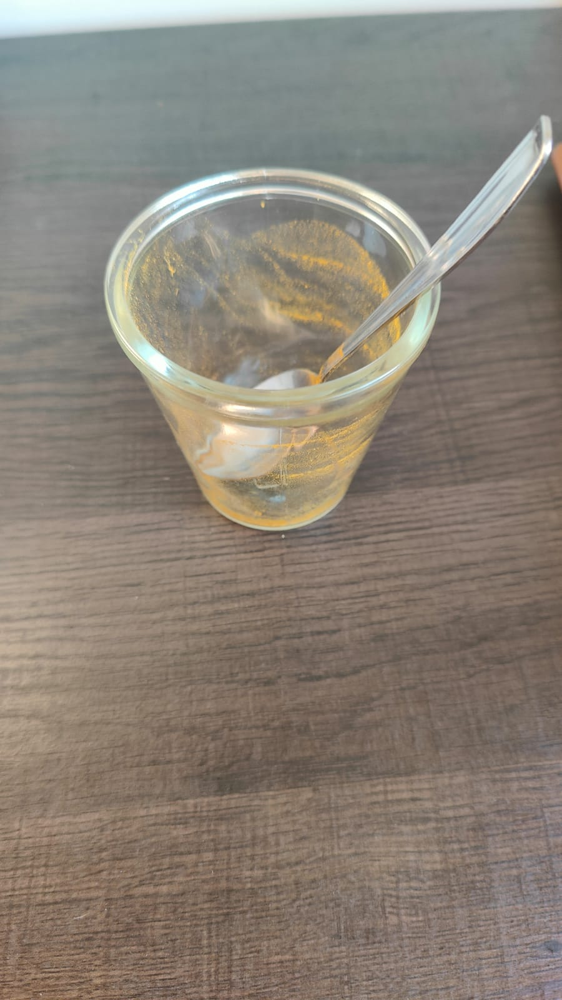
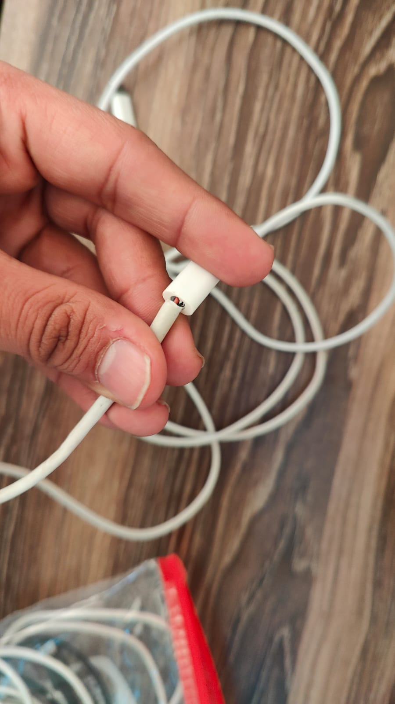
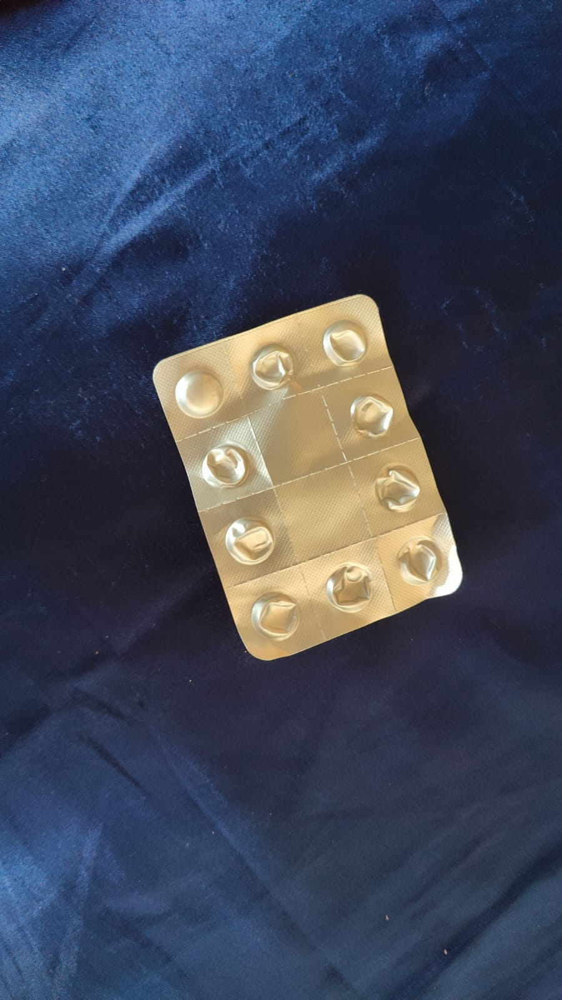
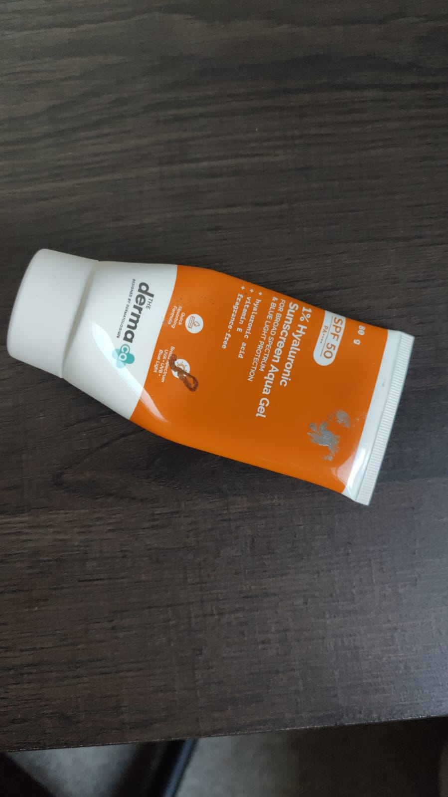
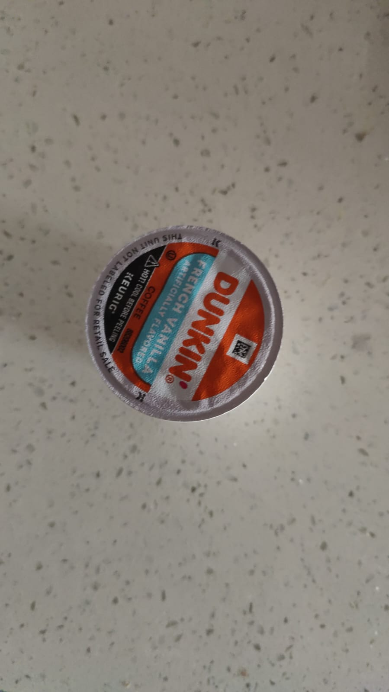
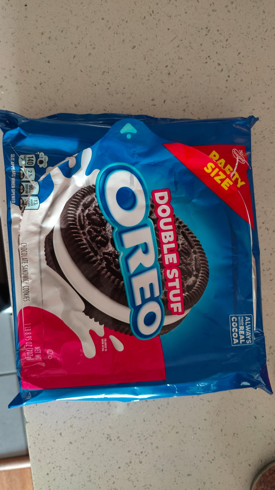
Following my gallery of images, here's a table presenting and comparing information about my nine discarded items:
| Item | Weight | Source | Location | Cost | Time Owned | Mode of Disposal | Primary Material |
|---|---|---|---|---|---|---|---|
| Coffee Pod | 10g | Grocery Store | Kitchen | $0.5/pod | 1 week | Trash | Plastic/Foil |
| Oreo Wrapper | 5g | Grocery Store | Kitchen | $3 | 1 week | Trash | Plastic |
| Disposable Glass Cup | 20g | Grocery Store | Kitchen | $2 | 1 week | Trash | Glass |
| Clothes Hanger | 50g | Clothing Store | Closet | $1 | 2 years | Trash | Plastic |
| Debit Card | 5g | Bank | Wallet | N/A | 2.5 years | Trash | Plastic/Metal |
| Phone Charger | 30g | Tech Store | Backpack | $15 | 1 year | Trash | Plastic/Metal |
| Sunscreen Bottle | 100g | Drugstore | Bathroom | $10 | 6 months | Trash | Plastic |
| Vitamin Bottle | 20g | Drugstore | Bathroom | $20 | 2 weeks | Trash | Plastic |
| Paper towels | 10g | Grocery Store | Kitchen | $5/roll | 1 week | Trash | Paper |
I've chosen my snapped debit card as the item of the week, not because it's particularly unique or interesting in itself, but because it represents a sudden and slightly unsettling disruption to my daily routine. It's a small, unassuming piece of plastic, yet it holds a significant amount of power in our modern, cashless society. Its unexpected demise served as a reminder of just how reliant I've become on this seemingly insignificant object.
I acquired this debit card 2 and a half years ago, fresh-faced and eager to manage my own finances. It arrived in the mail, a crisp, new rectangle promising financial independence. Initially, it felt like a symbol of adulthood, a tangible link to my bank account and the freedom to make my own purchases. It accompanied me on countless shopping trips, from grocery runs to impulsive book purchases. It paid for late-night study snacks, concert tickets, and the occasional emergency pizza. It even traveled with me on a few adventures, facilitating transactions in unfamiliar cities and foreign countries. It was always there, a silent partner in my financial life.
Then, last week, while attempting to pay for a coffee, disaster struck. A slight twist, a subtle crack, and suddenly, my trusty financial companion was rendered useless. The snap was audible, a small, sharp sound that echoed the sudden jolt of inconvenience. The cashier looked at me with a mixture of sympathy and mild amusement, as if this was a common occurrence. For a moment, I felt a strange sense of panic. How would I pay for my coffee? How would I buy groceries? How would I navigate the rest of the day without this essential piece of plastic?
My snapped debit card is a small part of a larger issue: our dependence on plastic and the environmental consequences that follow. While convenient, debit cards, like so many other everyday objects, are made from non-biodegradable plastic. According to various sources, the production of plastic requires significant amounts of fossil fuels, contributing to greenhouse gas emissions and climate change. Furthermore, the disposal of plastic is a major environmental problem. Plastic can take hundreds of years to decompose, and even then, it often breaks down into microplastics that can pollute our oceans and harm marine life. While my individual debit card represents a tiny fraction of the global plastic waste problem, it serves as a reminder of the cumulative impact of our reliance on this material. The fact that it broke so easily, after just a few years of use, also highlights the built-in obsolescence of many plastic products, designed not for longevity but for replacement, further perpetuating the cycle of consumption and waste.
So, there it is – a week's worth of my discarded belongings. From coffee pods to broken cards, this week's trash offers a glimpse into my daily life and its environmental impact. The snapped debit card, in particular, highlighted our reliance on plastic. Next week, I'll be even more mindful of my waste. Thanks for joining me! Share your thoughts below – what surprised you most?